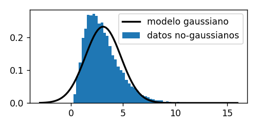

%matplotlib inline
import numpy as np
import pandas as pd
import scipy.stats
import matplotlib.pyplot as plt
from matplotlib import animation
from matplotlib import rcParams
rcParams['figure.dpi'] = 120
from IPython.display import HTML
from IPython.display import YouTubeVideo
from functools import partial
YouTubeVideo_formato = partial(YouTubeVideo, modestbranding=1, disablekb=0,
width=640, height=360, autoplay=0, rel=0, showinfo=0)
6. Estadística inferencial¶
La inferencia busca
Extraer conclusiones a partir de hechos u observaciones a través de un método o premisa
En el caso particular de la inferencia estadística podemos realizar las siguientes asociaciones
Hechos: Datos
Premisa: Modelo probabilístico
Conclusión: Una cantidad no observada que es interesante
Y lo que buscamos es
Cuantificar la incerteza de la conclusión dado los datos y el modelo
La inferencia estadística puede dividirse en los siguientes tres niveles
Ajustar un modelo a nuestros datos
Verificar que el modelo sea confiable
Responder una pregunta usando el modelo
En esta lección estudiaremos las herramientas más utilizadas asociadas a cada uno de estos niveles
Estimador de máxima verosimilitud
Bondad de ajuste e Intervalos de confianza
Test de hipótesis
6.1. Ajuste de modelos: Estimación de máxima verosimilitud¶
En este nivel de inferencia se busca ajustar un modelo teórico sobre nuestros datos. En esta lección nos enfocaremos en modelos de tipo parámetrico. Un modelo parámetrico es aquel donde se explicita una distribución de probabilidad.
Recordemos que una distribución tiene parámetros. Por ejemplo la distribución Gaussiana (univariada) se describe por su media \(\mu\) y su varianza \(\sigma^2\). Luego ajustar una distribución Gaussiana corresponde a encontrar el valor de \(\mu\) y \(\sigma\) que hace que el modelo se parezca lo más posible a la distribución empírica de los datos.
A continuación veremos los pasos necesarios para ajustar una distribución a nuestros datos
6.1.1. ¿Qué distribución ajustar?¶
Antes de ajustar debemos realizar un supuesto sobre la distribución para nuestro modelo. En general podemos ajustar cualquier distribución pero un mal supuesto podría invalidar nuestra inferencia
Podemos usar las herramientas de estadística descriptiva para estudiar nuestros datos y tomar esta decisión de manera informada
En el siguiente ejemplo, un histograma de los datos revela que un modelo gaussiano no es una buena decisión
¿Por qué? La distribución empírica es claramente asimétrica, su cola derecha es más pesada que su cola izquierda. La distribución Gaussiana es simétrica por lo tanto no es apropiada en este caso ¿Qué distribución podría ser más apropiada?
6.1.2. ¿Cómo ajustar mi modelo? Estimación de máxima verosimilitud¶
A continuación describiremos un procedimiento para ajustar modelos paramétricos llamado maximum likelihood estimation (MLE)
Sea un conjunto de datos \(\{x_1, x_2, \ldots, x_N\}\)
Supuesto 1 Los datos siguen el modelo \(f(x;\theta)\) donde \(f(\cdot)\) es una distribución y \(\theta\) son sus parámetros
Supuesto 2 Las observaciones son independientes e idénticamente distribuidas (iid)
Si dos variables son independientes se cumple que \(P(x, y) = P(x)P(y)\)
Si son además idénticamente distribuidas entonces tienen la misma distribución y parámetros
Usando esto podemos escribir
donde \(\mathcal{L}(\theta)\) se conoce como la verosimilitud o probabilidad inversa de \(\theta\)
Si consideramos que los datos son fijos podemos buscar el valor de \(\theta\) de máxima verosimilitud
El segundo paso es valido por que el máximo de \(g(x)\) y \(\log(g(x))\) es el mismo. El logaritmo es monoticamente creciente. Además aplicar el logaritmo es muy conveniente ya que convierte la multiplicatoria en una sumatoria.
Ahora sólo falta encontrar el máximo. Podemos hacerlo
Analíticamente, derivando con respecto a \(\theta\) e igualando a cero
Usando técnicas de optimización iterativas como gradiente descedente
Ejemplo: La pesa defectuosa
{kind=link}
Su profesor quiere medir su peso pero sospecha que su pesa está defectuosa. Para comprobarlo mide su peso \(N\) veces obteniendo un conjunto de observaciones \(\{x_i\}\). ¿Es posible obtener un estimador del peso real \(\hat x\) a partir de estas observaciones?
Modelaremos las observaciones como
donde \(\varepsilon_i\) corresponde al ruido o error del instrumento y asumiremos que \(\varepsilon_i \sim \mathcal{N}(0, \sigma_\varepsilon^2)\), es decir que el ruido es independiente y Gaussiano con media cero y varianza \(\sigma_\varepsilon^2\) conocida
Entonces la distribución de \(x_i\) es
Para encontrar \(\hat x\), primero escribimos el logaritmo de la verosimilitud
Luego debemos resolver
donde podemos ignorar el primer término de la verosimilitud ya que no depende de \(\theta\). Para encontrar el máximo derivamos la expresión anterior e igualamos a cero
Finalmente si despejamos llegamos a que
que se conoce como el estimador de máxima verosimilitud para la media de una Gaussiana
Recordemos que podemos comprobar que es un máximo utilizando la segunda derivada
6.1.3. Estimación MLE con scipy¶
Como vimos en la lección anterior el módulo scipy.stats provee de un gran número de distribuciones teóricas organizadas como
continuas de una variable
discretas de una variable
multivariadas
Las distribuciones comparten muchos de sus métodos, a continuación revisaremos los más importantes. A modo de ejemplo consideremos la distribución Gaussiana (Normal)
from scipy.stats import norm
dist = norm() # Esto crea una Gaussiana con media 0 y desviación estándar (std) 1
dist = norm(loc=2, scale=2) # Esto crea una Gaussiana con media 2 y std 2
Crear una muestra aleatoria con rvs
Luego de crear un objeto distribución podemos obtener una muestra aleatoria usando el método el atributo rvs
dist = norm(loc=2, scale=2)
dist.rvs(size=10, # Cantidad de números aleatorios generados
random_state=None #Semilla aleatoria
)
Esto retorna un arreglo de 10 números generados aleatoriamente a partir de dist
Evaluar la función de densidad de probabilidad
La función de densidad de la Gaussiana es
La densidad de un objeto distribución continuo puede obtenerse con el método pdf el cual es función de x
dist = norm(loc=2, scale=2)
p = dist.pdf(x # Un ndrray que representa x en la ecuación superior
)
plt.plot(x, p) # Luego podemos graficar la fdp
De forma equivalente, si deseamos la función de densidad acumulada usamos el método cdf
Para objetos distribución discretos debemos usar el atributo pmf
Ajustar los parámetros con MLE
Para hacer el ajuste se usa el método fit
params = norm.fit(data # Un ndarray con los datos
)
En el caso de la Gaussiana el vector params tiene dos componentes loc y scale. La cantidad de parámetros depende de la distribución que estemos ajustando. También es importante notar que para ajustar se usa norm (clase abstracta) y no norm() (instancia)
Una vez que tenemos los parámetros ajustados podemos usarlos con
dist = norm(loc=params[0], scale=params[1])
Para distribuciones que tienen más de dos parámetros podemos usar
dist = norm(*params[:-2], loc=params[-2], scale=params[-1])
6.1.4. Ejercicio¶
Observe la siguiente distribución y reflexione ¿Qué características resaltan de la misma? ¿Qué distribución sería apropiado ajustar en este caso?
df = pd.read_csv('../data/cancer.csv', index_col=0)
df = df[["diagnosis", "radius1", "texture1"]]
x = df["radius1"].values
fig, ax = plt.subplots(figsize=(5, 3), tight_layout=True)
ax.hist(x, bins=20, density=True)
ax.set_xlabel('Radio del nucleo');
Seleccione una distribución de
scipy.statsajustela a los datosGrafique la pdf teórica sobre el histograma
6.2. Verificación de modelos: Tests de bondad de ajuste¶
Una vez que hemos ajustado un modelo es buena práctica verificar que tan confiable es este ajuste. Las herramientas más típicas para medir que tan bien se ajusta nuestra distribución teórica son
los gráficos cuantil-cuantil (QQ plot)
el test no-paramétrico de Kolmogorov-Smirnov (KS)
A continuación revisaremos el test de KS para bondad de ajuste
El test de Kolmogorov-Smirnov
Es un test no-paramétrico que compara una muestra de datos estandarizados (distribución empírica) con una distribución de densidad acumulada (CDF) teórica. Este test busca refutar la siguiente hipótesis
Hipótesis nula: Las distribuciones son idénticas
Para aplicar el test primero debemos estandarizar los datos. Estandarizar se refiere a la transformación
es decir los datos estándarizados tienen media cero y desviación estándar uno
Esto puede hacerse fácilmente con NumPy usando
z = (x - np.mean(x))/np.std(x)
6.2.1. Test de KS con scipy¶
Podemos realizar el test de KS con la función scipy.stats.kstest donde
scipy.stats.kstest(rvs, # Una muestra de observaciones estandarizadas
cdf, # Una distribución acumulada teórica, por ejemplo scipy.stats.norm.cdf
...
)
Esta función retorna el valor del estadístico de KS y su p-value asociado. Mientras más cerca de cero sea el estadístico de KS mejor es el ajuste.
Más adelante haremos un repaso de tests de hipótesis en detalle. De momento recordemos que si el p-value es menor que una confianza \(\alpha=0.05\) entonces rechazamos la hipótesis nula con confianza \(1-\alpha = 0.95\) o \(95\%\)
6.2.2. Ejercicio¶
Considere la muestra de datos anterior
Seleccione un conjunto de distribuciones teóricas
Encuentra la que tiene mejor ajuste usando
kstest
6.3. Responder preguntas con nuestro modelo: Test de hipótesis¶
Se aplica un tratamiento nuevo a una muestra de la población
¿Es el tratamiento efectivo?
¿Existe una diferencia entre los que tomaron el tratamiento y los que no?
El test de hipótesis es un procedimiento estadístico para comprobar si el resultado de un experimento es significativo en la población
Para esto formulamos dos escenarios cada uno con una hipótesis asociada
Hipótesis nula (\(H_0\)): Por ejemplo
“El experimento no produjo diferencia”
“El experimento no tuvo efecto”
“Las observaciones son producto del azar”
Hipótesis alternativa (\(H_A\)): Usualmente el complemento de \(H_0\)
El test de hipótesis se diseña para medir que tan fuerte es la evidencia en contra de la hipótesis nula
6.3.1. Algoritmo general de un test de hipótesis¶
El siguiente es el algoritmo general de un test de hipótesis paramétrico
Definimos \(H_0\) y \(H_A\)
Definimos un estadístico \(T\)
Asumimos una distribución para \(T\) dado que \(H_0\) es cierto
Seleccionamos un nivel de significancia \(\alpha\)
Calculamos el \(T\) para nuestros datos \(T_{data}\)
Calculamos el p-value
Si nuestro test es de una cola:
Superior: \(p = P(T>T_{data})\)
Inferior: \(p = P(T<T_{data})\)
Si nuestro test es dos colas: \(p = P(T>T_{data}) + P(T<T_{data})\)
Finalmente:
Si \(p < \alpha\)
Rechazamos la hipótesis nula con confianza (1-\(\alpha\))
De lo contrario
No hay suficiente evidencia para rechazar la hipótesis nula
El valor de \(\alpha\) nos permite controlar el Error tipo I, es decir el error que cometemos si rechazamos \(H_0\) cuando en realidad era cierta (falso positivo)
Tipicamente se usa \(\alpha=0.05\) o \(\alpha=0.01\)
Errores de interpretación comunes
Muchas veces se asume que el p-value es la probabilidad de que \(H_0\) sea cierta dado nuestras observaciones
Esto es un grave error. Formálmente el p-value es la probabilidad de observar un valor de \(T\) más extremo que el observado, es decir
Otro error común es creer que no ser capaz de rechazar \(H_0\) es lo mismo que aceptar \(H_0\)
No tener suficiente evidencia para rechazar no es lo mismo que aceptar
6.3.2. Un primer test de hipótesis: El t-test de una muestra¶
Sea un conjunto de \(N\) observaciones iid \(X = {x_1, x_2, \ldots, x_N}\) con media muestral \(\bar x = \sum_{i=1}^N x_i\)
El t-test de una muestra es un test de hipótesis que busca verificar si \(\bar x\) es significativamente distinta de la media poblacional \(\mu\), en el caso de que no conocemos la varianza poblacional \(\sigma^2\)
Las hipótesis son
\(H_0:\) \(\bar x = \mu\)
\(H_A:\) \(\bar x \neq \mu\) (dos colas)
El estadístico de prueba es
donde \(\hat \sigma = \sqrt{ \frac{1}{N} \sum_{i=1}^N (x_i - \bar x)^2}\) es la desviación estándar muestral (sesgada)
Si asumimos que \(\bar x\) se distribuye \(\mathcal{N}(\mu, \frac{\sigma^2}{N})\) entonces \(t\) se distribuye t-student con \(N-1\) grados de libertad
Para muestras iid y \(N\) grande el supuesto se cumple por teorema central del límite
Si \(N\) es pequeño debemos verificar la normalidad de los datos
6.3.3. Aplicación de t-test para probar que la regresión es significativa¶
En un modelo de regresión lineal donde tenemos \(N\) ejemplos
Podemos probar que la correlación entre \(x\) es \(y\) es significativa con un test sobre \(\theta_1\)
Por ejemplo podemos plantear las siguientes hipótesis
\(H_0:\) La pendiente es nula \(\theta_1= 0\)
\(H_A:\) La pendiente no es nula: \(\theta_1\neq 0\) (dos colas)
Y asumiremos que \(\theta_1\) es normal pero que desconocemos su varianza. Bajo este supuesto se puede formular el siguiente estadístico de prueba
donde \(r\) es el coeficiente de correlación de Pearson (detalles más adelante) y la última expresión se obtiene reemplazando \(\theta^*=0\) y \(\text{SE}_{\theta_1} = \sqrt{ \frac{\frac{1}{N} \sum_i (y_i - \hat y_i)^2}{\text{Var}(x)}}\).
El estadístico tiene distribución t-student con dos grados de libertad (modelo de dos parámetros)
6.4. Ejercicio formativo: Regresión lineal¶
En lecciones anteriores estudiamos el modelo de regresión lineal el cual nos permite estudiar si existe correlación entre variables continuas. También vimos como ajustar los parámetros del modelo usando el método de mínimos cuadrados. En este ejercicio formativo veremos como verificar si el modelo de regresión ajustado es correcto
Luego de revisar este ejercicio usted habrá aprendido
La interpretación probabilística de la regresión lineal y la relación entre mínimos cuadrados ordinarios y la estimación por máxima verosimilitud
El estadístico \(r\) para medir la fuerza de la correlación entre dos variables
Un test de hipótesis para verificar que la correlación encontrada es estadística significativa
Usaremos el siguiente dataset de consumo de helados. Referencia: A handbook of small datasets, estudio realizado en los años 50
df = pd.read_csv('../data/helados.csv', header=0, index_col=0)
df.columns = ['consumo', 'ingreso', 'precio', 'temperatura']
display(df.head())
| consumo | ingreso | precio | temperatura | |
|---|---|---|---|---|
| 1 | 0.386 | 78 | 0.270 | 41 |
| 2 | 0.374 | 79 | 0.282 | 56 |
| 3 | 0.393 | 81 | 0.277 | 63 |
| 4 | 0.425 | 80 | 0.280 | 68 |
| 5 | 0.406 | 76 | 0.272 | 69 |
El dataset tiene la temperatura promedio del día (grados Fahrenheit), el precio promedio de los helados comprados (dolares), el ingreso promedio familiar semanal de las personas que compraron helado (dolares) y el consumo (pintas per capita).
A continuación se muestra un gráfico de dispersión del consumo en función de las demás variables. ¿Cree usted que existe correlación en este caso?
fig, ax = plt.subplots(1, 3, figsize=(8, 3), tight_layout=True, sharey=True)
for i, col in enumerate(df.columns[1:]):
ax[i].scatter(df[col], df["consumo"], s=10)
ax[i].set_xlabel(col)
ax[0].set_ylabel(df.columns[0]);
6.4.1. Interpretación probabilística y MLE de la regresión lineal¶
Sea \(y\) el consumo y \(x\) la temperatura.
Asumiremos errores gaussianos iid
y un modelo lineal de dos parámetros (linea recta)
Bajo estos supuestos el estimador de máxima verosimilitud es
Es decir que el estimador de máxima verosimilitud es equivalente al de mínimos cuadrados ordanrios \(\hat \theta= (X^T X)^{-1} X^T y\) que vimos anteriormente
Importante: Cuando utilizamos la solución de mínimos cuadrados estamos asumiendo implicitamente que las observaciones son iid y que la verosimilitud es Gaussiana
Derivando con respecto a los parámetros e igualado a cero tenemos que
Finalmente podemos despejar
de donde reconocemos las expresiones para la covarianza entre \(x\) e \(y\) y la varianza de \(x\)
6.4.2. Coeficiente de correlación de Pearson¶
La fuerza de la correlación se suele medir usando
donde \(r = \frac{\text{COV}(x, y)}{\sqrt{\text{Var}(x) \text{Var}(y)}} \in [-1, 1]\) se conoce como coeficiente de correlación de Pearson
donde
si \(r=1\) existe una correlación lineal perfecta
si \(r=-1\) existe una anticorrelación lineal perfecta
si \(r=0\) no hay correlación lineal entre las variables
En general un \(r>0.5\) se considera una correlación importante
Calculando \(r\) con y los parámetros de la regresión lineal
Podemos usar el atributo de dataframe
df.corr()
Que retorna la matriz de correlaciones lineales
df.corr()
| consumo | ingreso | precio | temperatura | |
|---|---|---|---|---|
| consumo | 1.000000 | 0.047935 | -0.259594 | 0.775625 |
| ingreso | 0.047935 | 1.000000 | -0.107479 | -0.324709 |
| precio | -0.259594 | -0.107479 | 1.000000 | -0.108206 |
| temperatura | 0.775625 | -0.324709 | -0.108206 | 1.000000 |
Si queremos también el valor de los parámetros podemos usar la función de scipy
scipy.stats.linregress(x, # Variable independiente unidimensional
y # Variable dependiente unidimensional
)
Esta función retorna una tupla con
Valor de la pendiente: \(\theta_1\)
Valor de la intercepta: \(\theta_0\)
Coeficiente de correlación \(r\)
p-value
Error estándar del ajuste
fig, ax = plt.subplots(1, 3, figsize=(8, 3), tight_layout=True, sharey=True)
ax[0].set_ylabel(df.columns[0]);
for i, col in enumerate(df.columns[1:]):
res = scipy.stats.linregress(df[col], df["consumo"])
x_plot = np.linspace(np.amin(df[col]), np. amax(df[col]), num=100)
ax[i].scatter(df[col], df["consumo"], label='datos', s=10)
ax[i].plot(x_plot, res.slope*x_plot + res.intercept, lw=2, c='r', label='modelo');
ax[i].set_xlabel(col)
ax[i].set_title(f"$r$: {res.rvalue:0.5f}")
ax[i].legend()
Es decir que visualmente parece existir
una correlación positiva alta entre consumo y temperatura
una correlación negativa moderada entre consumo y precio
una correlación cercana a cero entre consumo e ingreso
6.4.3. Test de hipótesis y conclusiones¶
La función linregress implementa el t-test sobre \(\theta_1\) que vimos anteriormente. Usemos estos resultados para verificar si las correlaciones son estadísticamente significativas
alpha = 0.05
for i, col in enumerate(df.columns[1:]):
res = scipy.stats.linregress(df[col], df["consumo"])
print(f"{col}: \t p-value:{res.pvalue:0.4f} \t ¿Menor que {alpha}?: {res.pvalue < alpha}")
ingreso: p-value:0.8014 ¿Menor que 0.05?: False
precio: p-value:0.1660 ¿Menor que 0.05?: False
temperatura: p-value:0.0000 ¿Menor que 0.05?: True
Como complemento visualizemos
las distribuciones bajo la hipótesis nula: linea azul
los límites dados por \(\alpha\): linea punteada negra
El valor del observado para cada una de las variables: linea roja
fig, ax = plt.subplots(1, 3, figsize=(8, 2), tight_layout=True, sharey=True)
ax[0].set_ylabel(df.columns[0]);
N = df.shape[0]
t = np.linspace(-7, 7, num=1000)
dist = scipy.stats.t(loc=0, scale=1, df=N-2) # dos grados de libertad
for i, col in enumerate(df.columns[1:]):
res = scipy.stats.linregress(df[col], df["consumo"])
t_data = res.rvalue*np.sqrt(N-2)/np.sqrt(1.-res.rvalue**2)
ax[i].plot(t, dist.pdf(t))
ax[i].plot([dist.ppf(alpha/2)]*2, [0, np.amax(dist.pdf(t))], 'k--')
ax[i].plot([dist.ppf(1-alpha/2)]*2, [0, np.amax(dist.pdf(t))], 'k--')
ax[i].plot([t_data]*2, [0, np.amax(dist.pdf(t))], 'r-')
ax[i].set_xlabel(col)
Conclusión
Basado en los p-values y considerando \(\alpha=0.05\)
¿Qué podemos decir de las correlaciones con el consumo de helados?
Rechazamos la hipótesis nula de que no existe correlación entre temperatura y consumo con un 95% de confianza
Para las variables ingreso y precio no existe suficiente evidencia para rechazar \(H_0\)
6.4.4. Reflexión final¶
En el ejercicio anterior usamos t-test para una regresión lineal entre dos variables ¿Qué prueba puedo usar si quiero hacer regresión lineal multivariada?
Se puede usar ANOVA
¿Qué pasa si…
mis datos tienen una relación que no es lineal?
\(\theta_1\) no es Gaussiano/normal?
si el ruido no es Gaussiano?
si el ruido es Gaussiano pero su varianza cambia en el tiempo?
En estos casos no se cumplen los supuestos del modelo o del test, por ende el resultado no es confiable
Si mis supuestos no se cumplen con ninguna prueba parámetrica, la opión es utilizar pruebas no-paramétricas
6.5. Prueba no-paramétrica: Bootstrap¶
Podemos estimar la incerteza de un estimador de forma no-paramétrica usando muestreo tipo bootstrap
Esto consiste en tomar nuestro conjunto de datos de tamaño \(N\) y crear \(T\) nuevos conjuntos que “se le parezcan”. Luego se calcula el valor del estimador que estamos buscando en los \(T\) conjuntos. Con esto obtenemos una distribución para el estimador como muestra el siguiente diagrama

Para crear los subconjuntos podríamos suponer independencia y utilizar muestreo con reemplazo. Esto consiste en tomar \(N\) muestras al azar permitiendo repeticiones, como muestra el siguiente diagrama

Si no es posible suponer indepdencia se puede realizar bootstrap basado en residuos y bootstrap dependiente. Puedes consultar más detalles sobre bootstrap aquí y acá. A continuación nos enfocaremos en el clásico muestreo con reemplazo y como implementarlo en Python
6.5.1. Implementación con Numpy y Scipy¶
La función numpy.random.choice permite remuestrear un conjunto de datos
Por ejemplo para la regresión lineal debemos remuestrar las parejas/tuplas \((x_i, y_i)\)
Luego calculamos y guardamos los parámetros del modelo para cada remuestreo. En este ejemplo haremos \(1000\) repeticiones del conjunto de datos
df = pd.read_csv('../data/helados.csv', header=0, index_col=0)
df.columns = ['consumo', 'ingreso', 'precio', 'temperatura']
x, y = df["temperatura"].values, df["consumo"].values
params = scipy.stats.linregress(x, y)
def muestreo_con_reemplazo(x, y):
N = len(x)
idx = np.random.choice(N, size=N, replace=True)
return x[idx], y[idx]
def boostrap_linregress(x, y, T=100):
# Parámetros: t0, t1 y r
params = np.zeros(shape=(T, 3))
for t in range(T):
res = scipy.stats.linregress(*muestreo_con_reemplazo(x, y))
params[t, :] = [res.intercept, res.slope, res.rvalue]
return params
boostrap_params = boostrap_linregress(x, y, T=1000)
6.5.2. Intervalos de confianza empíricos¶
Veamos la distribución empírica de \(r\) obtenida usando bootstrap
En la figura de abajo tenemos
Histograma azul: Distribución bootstrap de \(r\)
Linea roja: \(r\) de los datos
Lineas punteadas negras: Intervalo de confianza empírico al 95%
r_bootstrap = boostrap_params[:, 2]
fig, ax = plt.subplots(figsize=(4, 3), tight_layout=True)
hist_val, hist_lim, _ = ax.hist(r_bootstrap, bins=20, density=True)
ax.plot([params.rvalue]*2, [0, np.max(hist_val)], 'r-', lw=2)
IC = np.percentile(r_bootstrap, [2.5, 97.5])
ax.plot([IC[0]]*2, [0, np.max(hist_val)], 'k--', lw=2)
ax.plot([IC[1]]*2, [0, np.max(hist_val)], 'k--', lw=2)
print(f"Intervalo de confianza al 95% de r: {IC}")
Intervalo de confianza al 95% de r: [0.64965427 0.87369076]
De la figura podemos notar que el 95% de la distribución empírica esta sobre \(r=0.5\)
También podemos notar que la distribución empírica de \(r\) no es simétrica, por lo que aplicar un t-test parámetrico sobre \(r\) no hubiera sido correcto
6.5.3. Visualizando la incerteza del modelo¶
Usando la distribución empírica de los parámetros \(\theta_0\) y \(\theta_1\) podemos visualizar la incerteza de nuestro modelo de regresión lineal
En la figura de abajo tenemos
Puntos azules: Datos
Linea roja: Modelo de regresión lineal en los datos
Sombra rojo claro: \(\pm 2\) desviaciones estándar del modelo en base a la distribución empírica
fig, ax = plt.subplots(figsize=(4, 3), tight_layout=True)
ax.set_ylabel('Consumo')
ax.set_xlabel('Temperatura')
ax.scatter(x, y, zorder=100, s=10, label='datos')
def model(theta0, theta1, x):
return x*theta1 + theta0
ax.plot(x_plot, model(params.intercept, params.slope, x_plot),
c='r', lw=2, label='mejor ajuste')
dist_lines = model(boostrap_params[:, 0], boostrap_params[:, 1], x_plot.reshape(-1, 1)).T
mean_lines, std_lines = np.mean(dist_lines, axis=0), np.std(dist_lines, axis=0)
ax.fill_between(x_plot,
mean_lines - 2*std_lines,
mean_lines + 2*std_lines,
color='r', alpha=0.25, label='incerteza')
plt.legend();